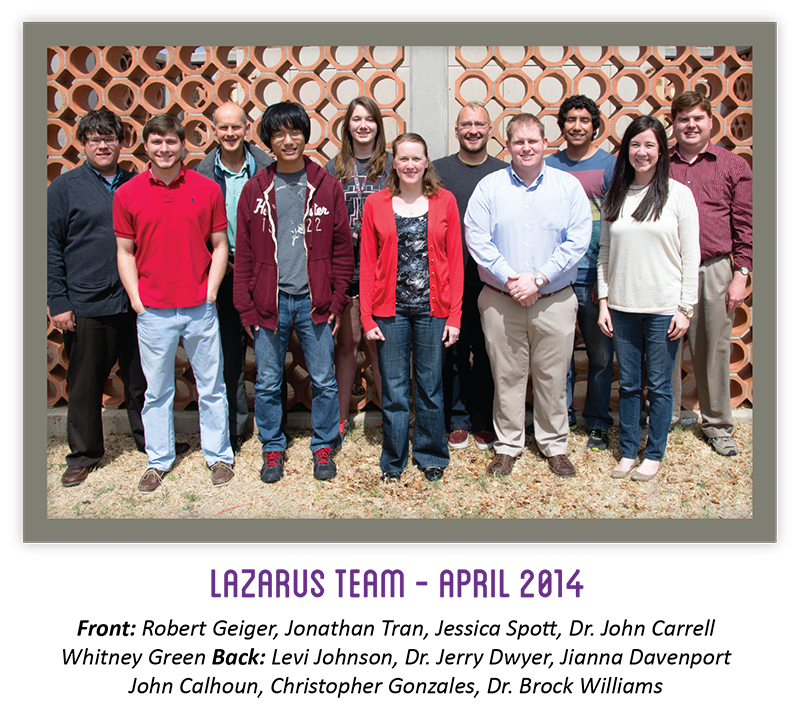

{kind=link}
{kind=link}
{kind=link}
#lazaruslives
The Lab for the Analysis of Zombie Activity and Research into Undead Simulations (LAZARUS) was founded at Texas Tech University in 2014 as the result of the synergistic efforts of the Department of Mathematics Statistics, the Science, Technology, Engineering, and Mathematics (STEM) Center for Outreach, Research Education (STEM-CORE), and a number of independent initiatives funded by the National Science Foundation. The lab is designed to serve two purposes: (1) support research opportunities for undergraduate and graduate students, and (2) support K12 outreach efforts designed to increase awareness and interest in STEM academic and career pathways. While the lab hosts a number of resources designed to support these objectives, a supercomputer branded as the Schoenberg Cluster is featured as the lab’s centerpiece.
About the LAZARUS Project
origin
The lab’s co-directors - Dr. Brock Williams (research) and Dr. Jerry Dwyer (outreach) - currently oversee the efforts of one graduate researcher (John Calhoun, MS) and four undergraduate researchers. The STEM-CORE also provides administrative staff support for the lab’s outreach activities. LAZARUS has taken several years and significant effort to establish, but the lab is finally a reality! Beginning in the Spring 2015 academic semester, the lab will also facilitate a newly developed undergraduate-level mathematical computing course designed to train students to utilize the Schoenberg Cluster.
Compute Cluster
The Schoenberg Cluster is a unique resource at Texas Tech as it is the largest and most powerful graphics processing unit (GPU) cluster on campus. As the design and assembly of the cluster was driven by Texas Tech graduate and undergraduate students with only support and guidance from faculty, it has proven to be an especially powerful recruitment and retention tool. In keeping with the theme of student-driven inquiry, priority access is given to graduate and undergraduate students who might be denied access to other, more traditional high performance computing resources.
Our Future
Moving forward, the LAZARUS project aims to also support the creation of new technologies. In the race to create the next generation of high performance computing, many challenges need to be tackled. Power consumption is becoming a limiting factor for larger computers. We are working on developing a new supercomputer architecture centered on reconfigurable computing and additive manufacturing. Reconfigurable computing using Field Programmable Gate Array (FPGA) technology has the ability to create more efficient software and hardware at lower costs and with more efficient rates of power consumption. Additive manufacturing in the form of 3D printed electronics lowers the deployment time and development cost of new computers. LAZARUS is uniquely engaging undergraduate and graduate students in exploring these cutting edge areas of research.
NVIDIA GPU Education Center
The LAZARUS project now includes the NVIDIA GPU Education Center. As a part of the GPU Education Center, LAZARUS is committed to advancing the state of parallel education using CUDA C/C++. NVIDIA equipment, including a Tesla K 40 and five Titan Black GPU's will be added to the lab, to enhance the coding education and possibilities. This equipment will be used in a programming class, housed under the Department of Mathematics & Statistics. This class will allow undergraduate students interested in programming an opportunity to do so, with top of the line equipment and technology.
For more information on NVIDIA GPU Education Center, please see the
GPU Education Center homepageContact LAZARUS: #lazaruslives
We've worked hard to make sure it's easy to connect with LAZARUS! First, we recommend that you sign up for our mailing list and check us out on the social media outlets linked from the buttons on the right. Second, we have posted our electronic and snail mail contact info below. Finally, be sure to check in at the TTU - LAZARUS Bunker on Foursquare if you decide to drop by in person!
E-mail: lazarus.ttu@gmail.comMailing Address: Attention LAZARUS, Box 41042, Texas Tech University, Lubbock, TX 79409-1042
Physical Location: The LAZARUS Bunker is located in the TTU Mathematics & Statistics Building, Room 107-Z
Phone: (806) 742-2542
LAZARUS Team
The Professors

Name:
Dr. John Carrell
Day Job:
Instructor, TTU Department of Industrial Engineering
LAZARUS Title:
Head Mechanic
LAZARUS Duties:
Dr. Carrell is overseeing the design and construction of the Schoenberg Cluster support structure.
Name:
Dr. Jerry Dwyer
Day Job:
Professor, TTU Department of Mathematics & Statistics; Director, TTU STEM-CORE
LAZARUS Title:
Humanitarian
LAZARUS Duties:
Dr. Dwyer manages the support staff and LAZARUS outreach efforts.
Links:
Website
Name:
Dr. Brock Williams
Day Job:
Professor, TTU Department of Mathematics & Statistics
LAZARUS Title:
Director
LAZARUS Duties:
Dr. Williams oversees all aspects of the LAZARUS Project.
Links:
Website
|
Video Interview
The Graduate Student
Name:
John Calhoun
Day Job:
Graduate Student, TTU Department of Mathematics & Statistics
LAZARUS Title:
Instigator
LAZARUS Duties:
John's predilection for the undead and passion for research seem to have started this whole thing.
Links:
Video Interview 1
|
Video Interview 2
The Support Staff

Name:
Whitney Green
Day Job:
TTU Assistant Coordinator of STEM Outreach
LAZARUS Title:
Queen of Color
LAZARUS Duties:
Whitney works hard to make the LAZARUS Project look good.
Name:
Levi Johnson
Day Job:
Senior Project Administrator, TTU STEM-CORE
LAZARUS Title:
Grump
LAZARUS Duties:
Levi works hard to keep projects on time and within budget (and devoid of fun).
Name:
Jessica Spott
Day Job:
Senior Program Administrator, TTU PRISM Scholars Program
LAZARUS Title:
Enforcer
LAZARUS Duties:
Jessica works hard to keep the team on task and the PRISM scholars on a path to success.
Schoenberg Cluster Developments
The Schoenberg Cluster features a collection of computing nodes (motherboards with two GPUs and memory but no hard drives), storage nodes (motherboards with less processing power but with plenty of memory and hard drive capacity), and a single head node which manages operations across the cluster. These CAD images show a preview of the case that is currently under construction to house the cluster.
The images below trace out the evolution of the external case design and implementation. A team of undergraduate industrial engineering interns under the supervision of faculty in the TTU Department of Industrial Engineering spearheaded the case design and fabrication. fabrication